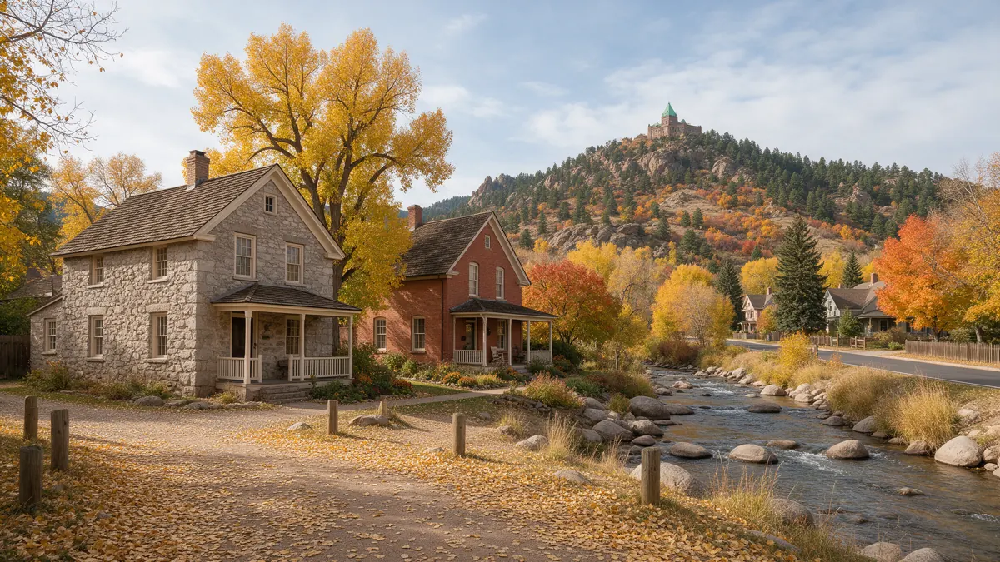

Golden CO Plumber Handbook

If you are looking for a plumber in Golden CO, here is a step by step handbook for the first call. Plumbing Pros Colorado is a referral line that connects you with independent local plumbers, who do the repair themselves. Golden's mix of historic buildings, college housing and canyon-edge homes gives plumbers a wide range of situations, and a good description from you helps them prepare.
First moves in a leak
Shut the main valve, drain a low tap, and move belongings. If you live in an apartment above a shop or restaurant on Washington Avenue, find out where the building's shutoffs are and tell the building owner.
Unplug electronics, wipe standing water and record the scene. Check that nothing is dripping into a ceiling light box.
- Close the main
- Drain a low tap
- Unplug electronics near water
- Tell the building owner if shared
- Photograph the damage
Early signs worth catching
Older homes and buildings near Golden's downtown can contain a mix of cast iron, galvanized steel and copper. Telltale signs include discolored water, ceiling stains below bathrooms, a mineral crust on fixtures and drains that gurgle.
Colorado School of Mines students and staff often live in older rental houses nearby. Slow leaks can go unnoticed in rentals, so quick reports to the landlord protect everyone.
Golden's older neighborhoods around Washington Avenue and the streets leading up toward Lookout Mountain have homes with deep, uneven lots. A plumber may take extra time to find a shutoff or cleanout on such a property.
Write down what you see in plain terms: where the stain is, whether it grows, and whether it smells. Golden's older buildings can have several layers of renovation, and a clear description gives the plumber a head start before opening anything.
How a plumber diagnoses
On arrival, the plumber checks the main and pressure, which can differ widely on Golden's slopes. A house on a hillside toward Genesee or Mount Galbraith may see different pressure from one near Clear Creek, so the plumber may check the pressure-reducing valve.
If a hidden leak is suspected, listening gear and thermal cameras trace the path. For sewer symptoms, a camera inspection shows roots, offsets and bellies. Rocky ground can make digging tougher, so ask about trenchless options.
If your home has a view of Table Mountain, you may also have steep driveways and retaining walls. Tell the plumber about access and any parking limits so the visit goes smoothly.
Questions for the plumber
What failed and why? Will the repair match the material of the surrounding pipe? Does the building need a permit? How will water service to other units be handled?
If you manage a commercial space or an older building, ask the plumber to note shutoff locations and pipe materials so you can keep a simple map for the future.
Winter weather up Highway 93 and Golden Gate Canyon Road can change quickly, which affects pipes in outbuildings, barns and workshops. Drain or heat those lines before a freeze.
Ask also whether the repair might disturb other tenants or neighbors, such as a shared wall or a line that serves the unit next door, and who needs advance notice before the water goes off.
Repair or replace in older buildings
In a historic building, partial replacement is common, because replacing everything is rarely practical. The plumber should explain which sections are old, what weak points remain and how new pipe ties into old.
Hillside and canyon homes may rely on PRVs, long supply lines and, in some outlying areas, wells. Ask the plumber how any of these affect the repair.
Business owners should consider writing a simple plumbing plan that lists shutoff locations, pipe materials and contact details. It helps staff react if a leak occurs after hours.
Preventing trouble in the foothills
Golden's weather swings between mild and sharp cold, with wind off the foothills along Highway 93 and I-70. Insulate exposed lines, close crawl space vents in winter as appropriate, and disconnect hoses in fall.
Track your water usage on the meter once a month, and keep a clear path to the shutoff. If you buy an older home, ask for a plumbing inspection with a sewer camera before closing.
Short-term rentals and student houses should have clear shutoff labels on the wall. A label in plain language, such as MAIN WATER, can help a tenant respond the moment something goes wrong.
If a repair needs digging, ask the plumber to call utility locating before starting, so gas, electric and water lines are marked first. Golden's older lots can hide lines that are not where you expect.
Frequently asked questions
Does Golden have steep terrain that affects pressure?
Yes. Elevation changes across town mean lots at the bottom of a hill often see higher pressure than those at the top. A plumber can measure at a hose bib and install or adjust a pressure-reducing valve. Ask the plumber to record the pressure reading so you can compare it later if a fixture starts to misbehave.
What if my building is historic?
Historic buildings may have rules about changes to walls, fixtures or exteriors. Tell the plumber about the building's status, and ask the owner or city about any approvals before opening finished walls. Heritage rules vary, so ask the city before altering visible features of a protected building.
What should a landlord do about a tenant's leak report?
Respond quickly, shut off water to the affected area if possible, and arrange a plumber. Document the date of the report and the repair. Delay can turn a small leak into mold or structural damage. Documenting conditions with dated photos protects both landlord and tenant.
How can I protect an unheated space like a garage?
Insulate pipes, seal air gaps and consider heat cable approved for your pipe type. Keep garage doors closed on the coldest nights, and open cabinets on exterior walls. Wrap exposed lines with insulation and check it each autumn for gaps and damage.
Can a plumber help with a creek-side basement?
A plumber can test whether the water is from a supply line, drain or groundwater, and can service sump pumps or backwater valves. Grading and foundation work may be needed from other trades. If groundwater is the culprit, a plumber may point you to a drainage specialist.
Plumbing services in Golden
- Water Leak Repair
- Emergency Plumbing
- Drain Cleaning
- Water Heater Services
- Sewer Line Repair
- Gas Line Services
- Slab Leak Repair
- Pipe Repair & Replacement
- Toilet Repair
- Bathroom Plumbing
Nearby Colorado cities
- Water leak repair in Conifer
- Water leak repair in Aurora
- Water leak repair in Loveland
- Water leak repair in Fort Collins
Ready to talk to someone? Call (720) 794-0974 or visit a plumber near Golden Colorado.